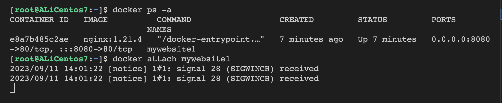

第六章-容器-一
什么是容器
通俗地讲，容器是镜像的运行实体。镜像是静态的只读文件，而容器带有运行时需要的可写文件层，并且容器中的进程属于运行状态。即容器运行着真正的应用进程。容器有初建、运行、停止、暂停和删除五种状态。虽然容器的本质是主机上运行的一个进程，但是容器有自己独立的命名空间隔离和资源限制。也就是说，在容器内部，无法看到主机上的进程、环境变量、网络等信息，这是容器与直接运行在主机上进程的本质区别。容器是基于镜像创建的可运行实例，并且单独存在，一个镜像可以创建出多个容器。运行容器化环境时，实际上是在容器内部创建该文件系统的读写副本。 这将添加一个容器层，该层允许修改镜像的整个副本。
容器的生命周期
created：初建状态
running：运行状态
stopped：停止状态
paused： 暂停状态
deleted：删除状态
命令控制状态转换
docker run： 创建容器，并立即启动运行，进入运行状态；docker start： 容器转为运行状态；docker stop： 容器将转入停止状态；docker kill： 容器在故障（死机）时，执行 kill（断电），容器转入停止状态，这种操作容易丢失数据，除非必要，否则不建议使用；docker restart： 重启容器，容器转入运行状态；docker pause： 容器进入暂停状态；docker unpause： 取消暂停状态，容器进入运行状态；docker rm： 删除容器，容器转入删除状态。killed by out-of-memory（因内存不足被终止）：宿主机内存被耗尽，也被称为 OOM：非计划终止这时需要杀死最吃内存的容器container process exitde（异常终止）：出现容器被终止后，将进入 Should restart?选择操作：yes 需要重启，容器执行 start 命令，转为运行状态。
no 不需要重启，容器转为停止状态。
容器命令详解
命令清单
| 命令 | 别名 | 功能 |
|---|---|---|
| docker create | docker container create | 创建容器 |
| docker run | docker container run | 运行容器 |
| docker attach | docker container attach | 连接到正在运行中的容器 |
| docker commit | docker container commmit | 将镜像提交为容器 |
| docker cp | docker container cp | 在容器和宿主机之间拷贝 |
| docker diff | docker container diff | 检查容器里文件结构的更改 |
| docker exec | docker container exec | 在运行的容器中执行命令 |
| docker export | docker container export | 将容器导出为 tar |
| docker container inspect | 查看容器详细信息 | |
| docker kill | docker container kill | 杀死容器 |
| docker logs | docker container logs | 查看日志 |
| docker ps | docker container ls docker container list docker container ps | 查看正在运行的进程 |
| docker pause | docker container pause | 暂停进程 |
| docker port | docker container port | 查看容器的端口映射 |
| docker container prune | 删除停止的容器 | |
| docker rename | docker container rename | 重命名容器 |
| docker restart | docker container restart | 重启容器 |
| docker rm | docker container rm docker container remove | 删除容器 |
| docker start | docker container start | 启动容器 |
| docker stats | docker container stats | 查看资源占用信息 |
| docker stop | docker container stop | 停止容器 |
| docker top | docker container top | 查看某个容器的资源占用 |
| docker unpause | docker container unpause | 继续运行容器 |
| docker update | docker container update | 更新容器配置 |
| docker wait | docker container wait | 阻止一个或多个容器停止，然后打印退出码 |
docker create
docker create [OPTIONS] IMAGE [COMMAND] [ARG...]参数和docker run基本上是一样的。
-i: 以交互模式运行容器，通常与 -t 同时使用；-P: 随机端口映射，容器内部端口随机映射到主机的端口-p: 指定端口映射，格式为：主机(宿主)端口:容器端口-t: 为容器重新分配一个伪输入终端，通常与 -i 同时使用；--name="nginx-lb": 为容器指定一个名称；-h "mars": 指定容器的 hostname；-e username="ritchie": 设置环境变量；--cpuset-cpus="0-2" / --cpuset-cpus="0,1,2": 绑定容器到指定 CPU 运行；-m :设置容器使用内存最大值；--network="bridge": 指定容器的网络连接类型；--link=[]: 添加链接到另一个容器；--volume , -v: 绑定一个卷--rm :shell 退出的时候自动删除容器--restart:自动重启docker logs
docker logs [OPTIONS] CONTAINER参数
-f, --follow: 跟踪日志输出--since : 显示某个开始时间的所有日志-t, --timestamps : 显示时间戳--tail : 仅列出最新 N 条容器日志先启动一个容器。
查看现在正在运行的容器。
[root@ALiCentos7:~]$ docker ps -aCONTAINER ID IMAGE COMMAND CREATED STATUS PORTS NAMESe8a7b485c2ae nginx:1.21.4 "/docker-entrypoint.…" About a minute ago Up About a minute 0.0.0.0:8080->80/tcp, :::8080->80/tcp mywebsite1查看日志。
-f选项可以实时输出结果。
docker attach
连接到正在运行中的容器。
docker attach [OPTIONS] CONTAINER--sig-proxy : 是否将所有信号代理，默认是 true，如果设置为 false，退出的话不会影响容器，否则退出会导致容器退出。很好理解，就是连接到一个容器上。

在这个bash上，是可以收到这个容器的io信息的，如果我们此时^C，这个容器也会被杀掉。
也就是说，attach进去之后，容器是可以收到这个bash发送的信号的。
但是，如果带上--sig-proxy，信号就会被代理。
docker exec
在容器中执行命令。
docker exec [OPTIONS] CONTAINER COMMAND [ARG...]参数
xxxxxxxxxx-d : 分离模式: 在后台运行-i : 即使没有附加也保持 STDIN 打开-t : 分配一个伪终端-e : 设置环境变量-u, --user : 指定用户 "<name|uid>[:<group|gid>]"-w, --workdir: 指定工作目录实操。

docker start 和 docker stop
很简单，直接看例子。
但是docker stop有参数的。
xxxxxxxxxx-s : 发送的信号docker restart
重启容器
xxxxxxxxxxdocker restart [OPTIONS] CONTAINER [CONTAINER...]xxxxxxxxxx-s : 发送信号docker kill
强制退出容器
参数：-s :发送的信号
docker stop 发送的是
SIGTERM信号，docker kill 发送的是SIGKILL信号
docker kill会更暴力地杀死一个容器。
docker top
查看容器中运行的进程信息，支持 ps 命令参数。
xxxxxxxxxxdocker top CONTAINER [ps OPTIONS]容器运行时不一定有/bin/bash 终端来交互执行 top命令，而且容器还不一定有top命令，可以使用 docker top来实现查看容器中正在运行的进程。
docker stats
显示容器资源的使用情况，包括：CPU、内存、网络 I/O 等。
xxxxxxxxxxdocker stats [OPTIONS] [CONTAINER...]参数
xxxxxxxxxx--all , -a : 显示所有的容器，包括未运行的。--format : 指定返回值的模板文件。如 table,json--no-stream : 展示当前状态就直接退出了，不再实时更新。--no-trunc : 不截断输出。docker container inspect
查看容器详细信息
xxxxxxxxxxdocker container inspect [OPTIONS] CONTAINER [CONTAINER...]参数
xxxxxxxxxx-f : 指定返回值的模板文件。如 table、json-s : 显示总的文件大小。可以重定向到一个.json文件里面去。
xxxxxxxxxxdocker container inspect mywebsite > mywebsite_docker_tmp.jsondocker port
用于列出指定的容器的端口映射，或者查找将 PRIVATE_PORT NAT 到面向公众。
xxxxxxxxxxdocker port CONTAINER [PRIVATE_PORT[/PROTO]]docker cp
在容器和宿主机之间拷贝文件
xxxxxxxxxxdocker cp [OPTIONS] CONTAINER:SRC_PATH DEST_PATH|-docker cp [OPTIONS] SRC_PATH|- CONTAINER:DEST_PATHdocker diff
xxxxxxxxxxdocker diff CONTAINERdocker commit
从容器创建一个新的镜像。
xxxxxxxxxxdocker commit [OPTIONS] CONTAINER [REPOSITORY[:TAG]]参数
xxxxxxxxxx-a : 提交的镜像作者；-c : 使用 Dockerfile 指令来创建镜像；可以修改启动指令-m : 提交时的说明文字；-p : 在 commit 时，将容器暂停xxxxxxxxxxdocker commit mywebsite mywebsite-yufc:v1.0docker pause 和 docker unpause
暂停容器中所有的进程。
xxxxxxxxxxdocker pause CONTAINER [CONTAINER...]docker rm
删除停止的容器。
xxxxxxxxxxdocker rm [OPTIONS] CONTAINER [CONTAINER...]关键参数：
xxxxxxxxxx-f : 通过 SIGKILL 信号强制删除一个运行中的容器docker wait
阻塞运行直到容器停止，然后打印出它的退出代码。
xxxxxxxxxxdocker wait CONTAINER [CONTAINER...]先把一个容器运行起来，然后退出，让docker wait打印退出码看看。
docker rename
给一个容器重命名
xxxxxxxxxxdocker rename CONTAINER NEW_NAMEdocker container prune
xxxxxxxxxxdocker container prune [OPTIONS]参数
xxxxxxxxxx-f, --force : 不提示是否进行确认docker update
更新容器配置
xxxxxxxxxxdocker update [OPTIONS] CONTAINER [CONTAINER...]参数
--cpus ：cpu 数量--cpuset-cpus : 使用哪些 cpu--memory : 内存限制--memory-swap ：交换内存--cpu-period : 是用来指定容器对 CPU 的使用要在多长时间内做一次重新分配--cpu-quota ：是用来指定在这个周期内，最多可以有多少时间用来跑这个容器